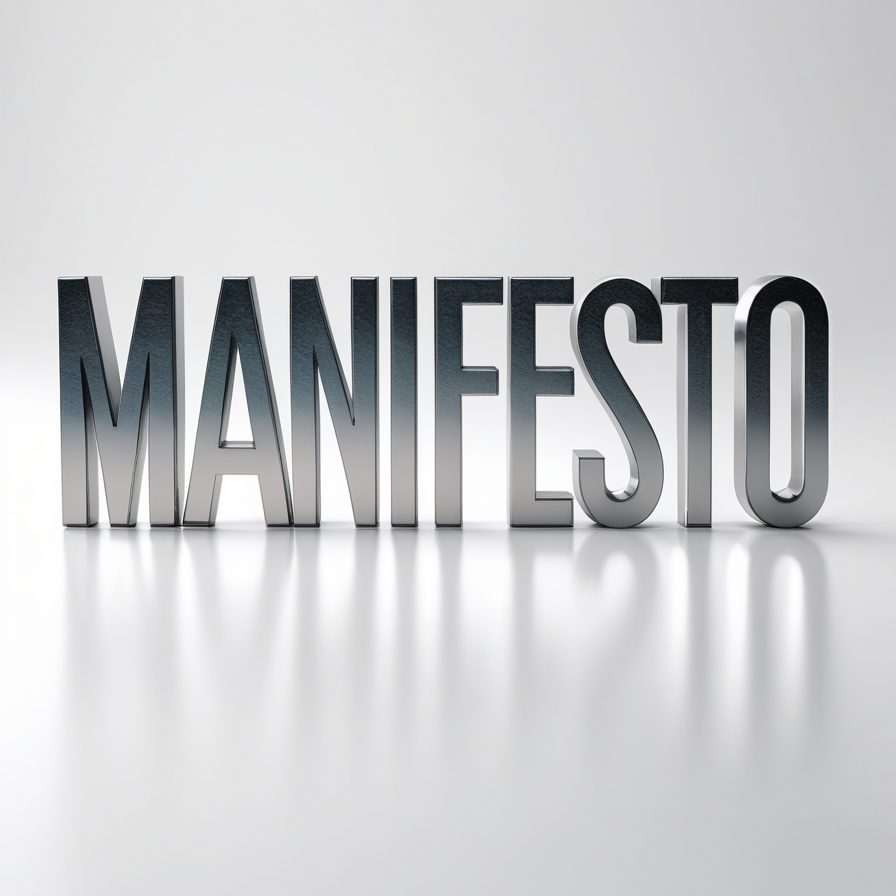
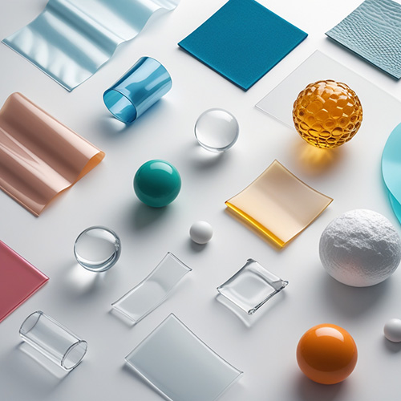
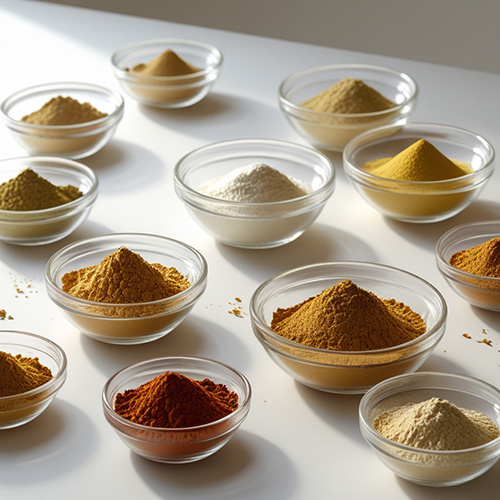
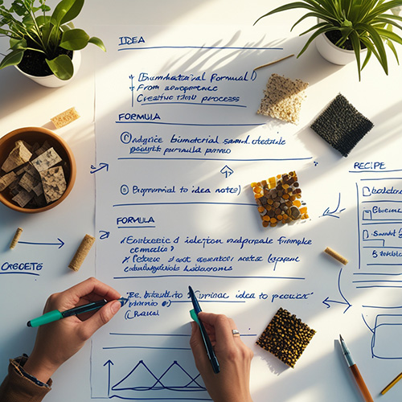
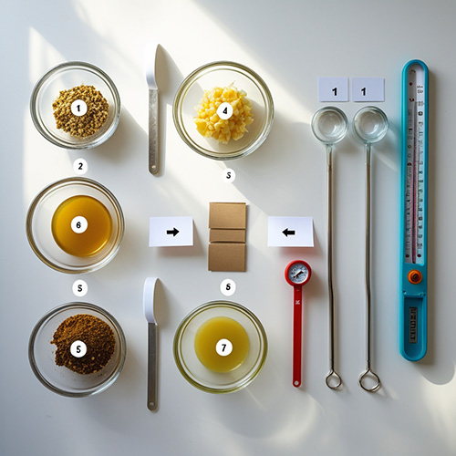
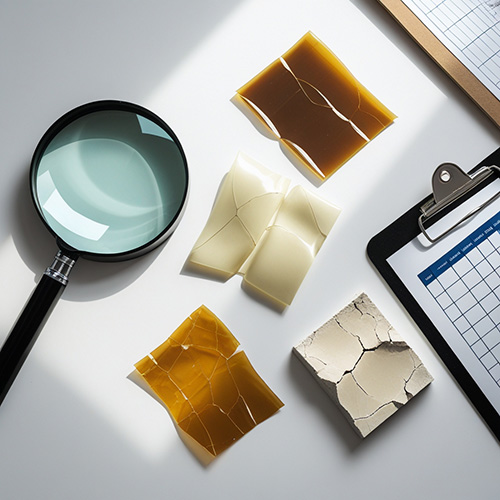

Tre parole si tengono magicamente insieme: forma, materiale, tecnologia. Impossibile parlare di forma prescindendo dal materiale e ugualmente senza le opportune tecnologie il materiale e la sua forma sono una pura astrazione. Questo è vero per l'alluminio, per il legno, per i polimeri. È vero anche per i biomateriali.
BioLab nasce da una constatazione semplice: i biomateriali esistono, funzionano (fino ad un certo punto...per adesso), hanno applicazioni reali e in continuo sviluppo, ma gli studenti di design non hanno strumenti per comprenderli nei loro percorsi di creatività e di innovazione. Possono trovare ricette, che seguono senza capire. Hanno nomi di ingredienti, che memorizzano senza collegare. Non hanno un vocabolario, e senza vocabolario non si costruiscono frasi, e senza frasi non si fanno discorsi — leggi: progetti.
Il problema non è la chimica. Il problema è che uno studente di design dovrebbe saper dire «mi serve un film flessibile, trasparente, che regga l'umidità e sia realmente biodegradabile» e sapere che questa frase contiene già una contraddizione, che la gelatina gli dà le prime due cose ma non la terza, che per la terza serve un reticolante o un lipide, e che questo cambierà altre proprietà. Non deve diventare un chimico. Deve imparare a ragionare sul materiale come variabile progettuale.
Adotta lo stesso approccio che si usa nell'insegnamento delle tecnologie dei materiali tradizionali nelle scuole di progettazione: costruire un vocabolario operativo che consenta allo studente di includere il materiale come variabile attiva nel processo progettuale.
Come un corso di tecnologia del legno per designer non forma falegnami né xilologi, ma insegna a distinguere tra un legno a fibra lunga e uno a fibra corta, cosa voglia dire usare il legno «contro-vena» e a capire cosa questo implichi per la forma, BioLab non forma chimici né biotecnologi. Insegna a riconoscere che un polisaccaride anionico (illustre sconosciuto) ha bisogno di ioni (di cosa?) per gelificare, che un plastificante abbassa la temperatura di transizione vetrosa (…in che senso?), che trasparenza e resistenza all'acqua sono proprietà spesso in conflitto — e a usare queste relazioni per orientare scelte progettuali.
Lo studente che esce da questo percorso non saprà formulare una bioplastica industriale. Forse però saprà maneggiare con competenza i rapporti tra forma, materiale e tecnologia in un campo nuovo. E questo è esattamente ciò che serve a un progettista.
Il modello a famiglie chimiche adottato è una scelta progettuale, non una scorciatoia. Con 80 ingredienti servirebbero migliaia di regole di compatibilità coppia per coppia. Impossibile da costruire, impossibile da mantenere, impossibile da insegnare. Raggruppare per famiglie — proteine, polisaccaridi, plastificanti, reticolanti — significa privilegiare la trasferibilità concettuale sulla precisione puntuale.
Lo studente che capisce il meccanismo della reticolazione ionica sull'alginato potrebbe riconoscere lo stesso principio nella pectina, senza dover memorizzare due schede tecniche separate. Questo è un guadagno didattico, non una perdita di rigore.
I valori numerici sono indicativi e calibrati sulla letteratura disponibile e sull'esperienza di laboratorio. Per applicazioni che superano l'ambito della sperimentazione didattica, il passaggio a fonti primarie e test specifici non è facoltativo — ed è parte di ciò che il corso insegna a riconoscere.
La pratica corrente dei biomateriali segue un percorso in avanti: ingredienti, ricetta, proprietà, e poi ci si chiede «Cosa me ne faccio?». Lo studente prova ricette sperando che il risultato sia utile per il suo progetto.
BioLab propone anche il percorso inverso: proprietà desiderate → ingredienti suggeriti → verifica compatibilità → sperimentazione guidata. Lo studente non cerca «cosa fa la gelatina» ma si chiede «come ottengo un film flessibile e trasparente?» e il sistema propone percorsi possibili.
Lo strumento non dà ricette pronte. Prova a veicolare ragionamento progettuale: costruire soluzioni, non seguire istruzioni. Relazioni causa-effetto: ogni ingrediente ha un perché. Questo il limite della conoscenza: distinzione tra certezze e ipotesi. Non si può avere tutto, e saperlo è già progettare.
Ho trovato, nella mia carriera di progettista, che la freschezza di un approccio ancora inesperto può produrre idee e soluzioni che l'esperto non avrebbe prodotto. Più conosci il problema, più è difficile applicarsi, ingabbiati dalle regole di fattibilità. BioLab è uno strumento che libera dall'intimidazione tecnica e permette di pensare con i materiali invece che intorno ai materiali.
Chi volesse obiettare che mancano le curve stress-strain o che le temperature di transizione vetrosa sono approssimate, avrebbe ragione. Ma starebbe giudicando un pesce dalla sua capacità di arrampicarsi sugli alberi.
Configuratore Biomateriali
Accademia Albertina di Belle Arti di Torino · Scuola PAI
Tipologia dei Nuovi Materiali · Prof. Paolo Maccarrone




